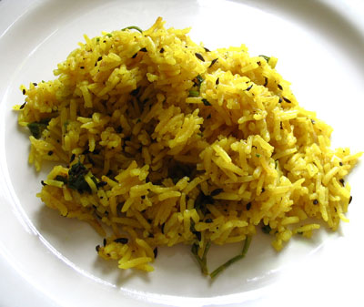

Fried Rice Recipe

Description
The classic from southern Italy. Simple but sublime - spaghetti in a fruity tomato sauce served with parmesan cheese.
Ingredients
- 200g spaghetti
- tomato sauce
- parmesan
Steps
- Heat 500ml of water in a pot
- Heat the sauce in a pot
- When the water boils add the spaghetti
- When both sauce is hot and spaghetti is al-dente serve with parmesan
Home